Abstract
A substantial line of work builds rotation invariance directly into point cloud architectures. We benchmark 10 architectures (PointNet, PointNet++, DGCNN, RIConv, RIConv++, RISurConv, PointMLP, PointTransformer, and the equivariant VN-PointNet and VN-DGCNN) across 5 domains under pose, noise, and occlusion, and analyze the results with confirmatory hypothesis tests rather than point estimates. The three rotation-invariant (RI) architectures achieve the best pose robustness but rank among the lowest on noise robustness in 4 of 5 domains. We ask whether this cost is intrinsic to invariance or specific to how invariance is obtained. We retrain all 10 architectures unchanged, with a simple invariance loss on the embedding and three training seeds each, and evaluate all models on the independently designed ModelNet40-C. Invariance training transfers narrowly but reliably. It improves exactly the corruption families its perturbations target wherever the baseline has headroom (mean occlusion +10.5, lidar +13.4 percentage points of accuracy). At matched training budget the best standard backbone and the best RI architecture end on par on unseen corruptions (within 2.5 percentage points in every seed), and invariance-trained RIConv++ is the most seed-stable top model. Once rotation augmentation is widened, standard backbones concede only a flat, angle-independent accuracy offset under full-sphere rotation. We release the benchmark along with a package for analyzing point cloud robustness and reproducing our results.
The benchmark
Three perturbations, each at five severity levels, applied to 1024-point clouds from five domains. Three of the five levels are shown here.
Pose rotation angle
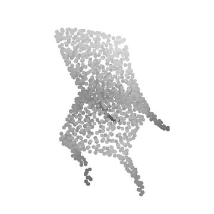
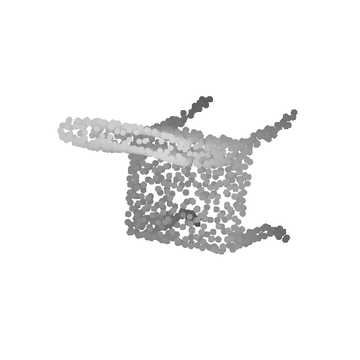
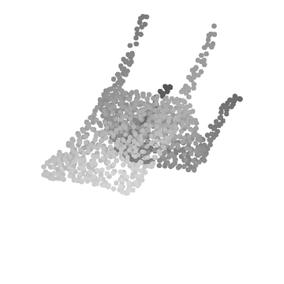
Noise Gaussian σ
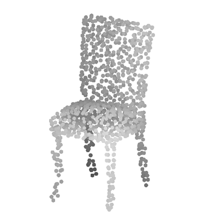
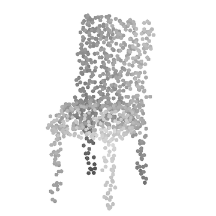
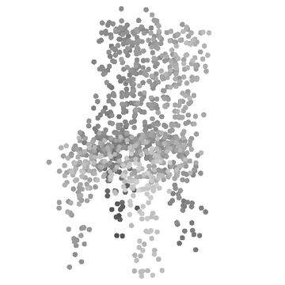
Occlusion camera distance multiplier; dark points are kept, light points removed
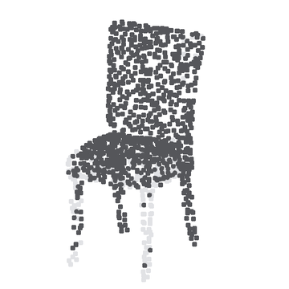
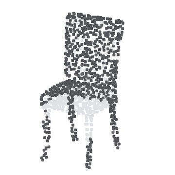
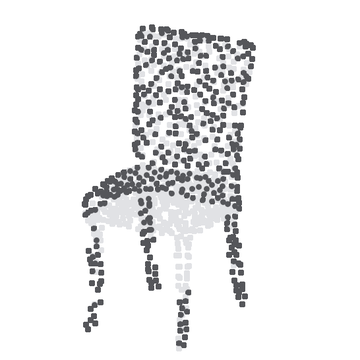
Domains
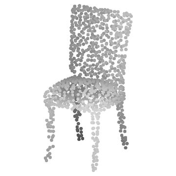
synthetic CAD
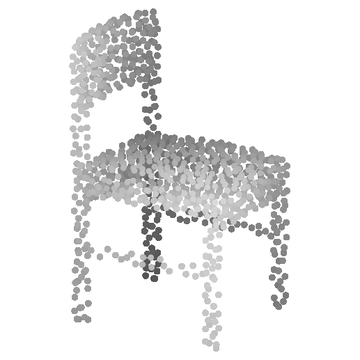
synthetic CAD
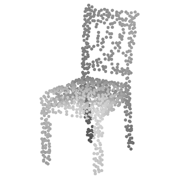
product scans
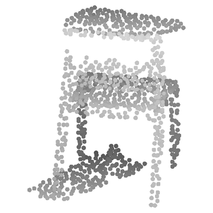
real indoor scans
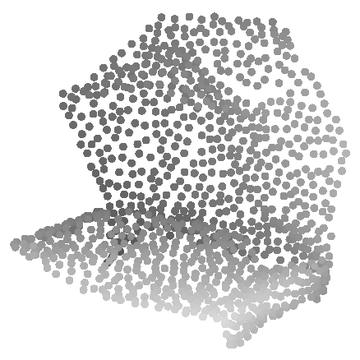
real building scans
Results
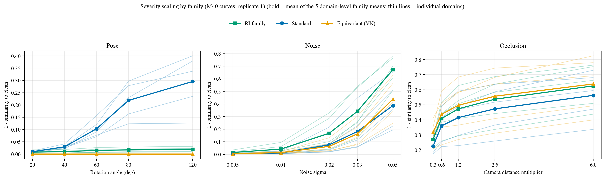
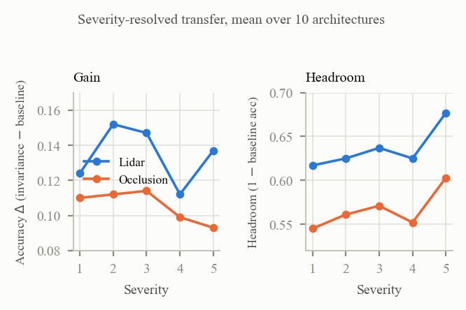
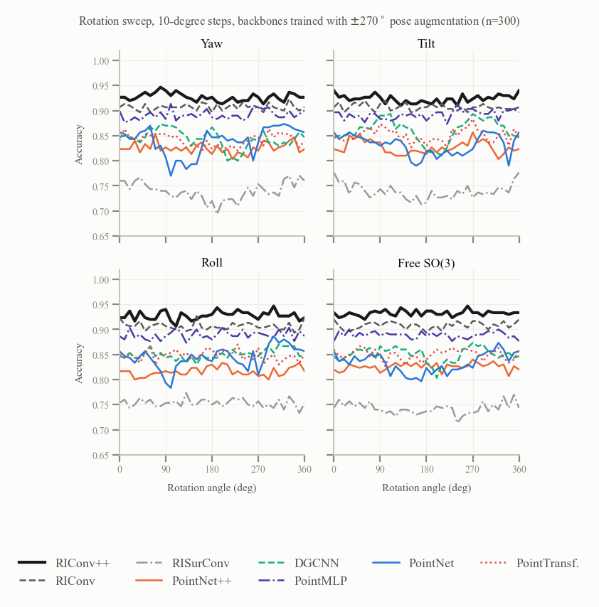
Package
pcrobust packages the corruption generators, the 10 architectures, the evaluation protocol, the statistical pipeline, the training recipes, and all 193 trained checkpoints. The version evaluated in the paper is v1.0.0.
pip install pcrobust
# Rebuild a paper table from the bundled data and check every number (no GPU)
pcrobust reproduce tab:noise --compare-paperimport numpy as np
import pcrobust
pts = np.random.rand(1024, 3).astype(np.float32)
occluded = pcrobust.corrupt(pts, "occlusion", severity=3)
# Checkpoints download on first use and are verified by SHA256
model, classes = pcrobust.load_model("modelnet40/riconvpp_invreg_rep1.pth")MIT for code. Checkpoints and result CSVs: CC BY 4.0.
BibTeX
@inproceedings{chowdhury2027rotation,
title={Do We Still Need Rotation-Invariant Architectures? A Statistical Robustness Benchmark for Point Cloud Classification},
author={Chowdhury, Abdulla Nasir and Pratamasunu, Gulpi Qorik Oktagalu and Fukui, Kazuhiro},
booktitle={Proceedings of the IEEE/CVF Winter Conference on Applications of Computer Vision (WACV)},
year={2027},
eprint={2611.03952},
archivePrefix={arXiv},
doi={10.48550/arXiv.2611.03952}
}